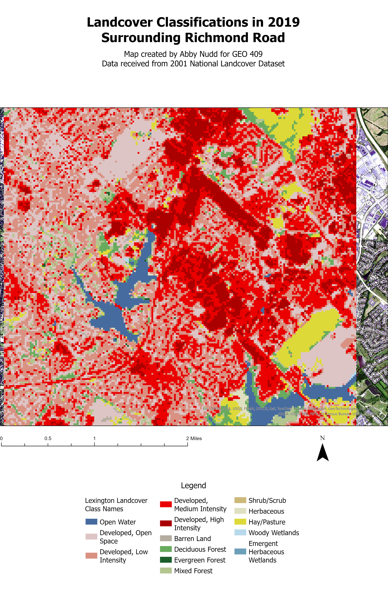

Cesium Slideshow
The area along Richmond Road is filled with development and subdivisions. Richmond Road is one of Lexington's busiest traffic corridors, especially with the expansion of housing and commercial businesses in recent years. In the Cesium Slide 3, the blue areas represent added development, while the red/orange areas show removed areas in the landscape. It is clear that tree cover has mostly increased, however there has been removal as well. There are multiple locations were development can be shown.
The goal of this project is to visualize the changes in landcover types and development along this stretch of Richmond Road in the last 20 years. It is clear that from 2011 to 2019 there was an increase in development, specifically High Intensity. In the Landcover visualizations from 2001 and 2019, there is a larger change shown because of the wider time gap. From 2001 to 2019, there was an increase in development. This occurs in areas that were previously open space, as well as areas that were previously pasture.
Visualizations created from lidar data provided by KyFromAbove in ArcGIS Pro and Blender. Additional sources of information from 2001, 2011, 2019 National Landcover Datasets., April, 2023.
Page and visualizations created by Abby Nudd for GEO 409, Department of Geography, University of Kentucky. Spring 2024.
Broad Landcover in 2001
Broad Landcover in 2019